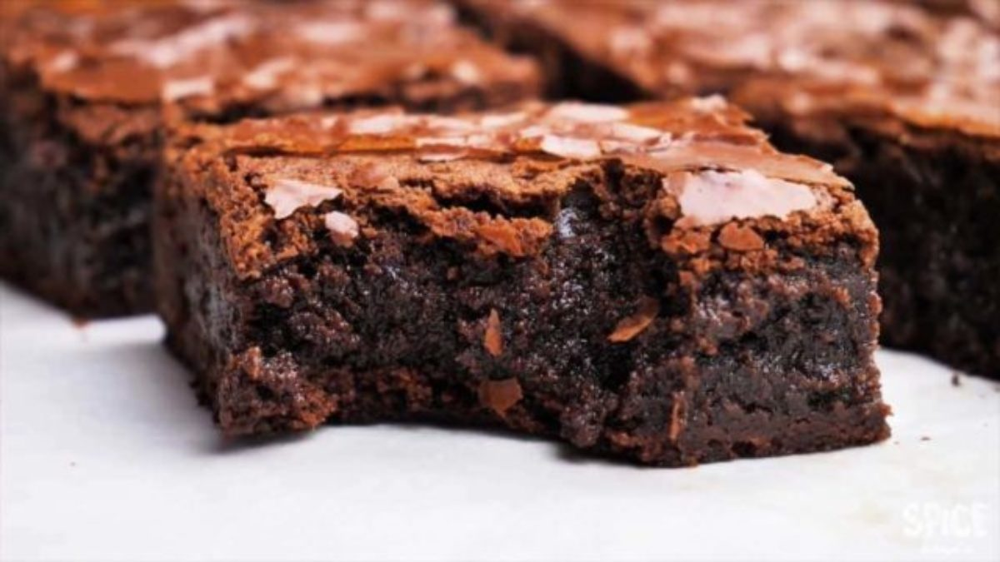

BM D
BROWNIE SUPER FÁCIL

INGREDIENTES
- 6 colheres (sopa) bem cheias, de margarina sem sal
- 3/4 xícara (chá) achocolatado
- 1/2 xícara (chá) chocolate em pó
- 1 e 1/4 xícara (chá) farinha de trigo
- 2 xícaras (chá) açúcar
- 4 ovos
- 2 pitadas de sal
- 1 colheres (chá) de extrato ou essência de baunilha
- 1 tablete de chocolate meio amargo picado em cubinhos
- 1/2 xícara (chá) de nozes picadas ou castanhas de caju granuladas
COMPRAR INGREDIENTES
MODO DE PREPARO
- Misture os ovos e o açúcar.
- Em seguida, agregue todos os outros ingredientes até formar um creme uniforme.
- Despeje em uma assadeira, forrada com papel-manteiga e leve ao forno médio por 40 minutos.
- O brownie estará pronto quando a parte de cima estiver levemente corada e, ao se espetar um palito, ele esteja levemente úmido (devido ao chocolate derretido).
- Corte em quadrados ainda quente e sirva com uma bola de sorvete de creme, ou congele num saquinho para freezer.
- Para descongelar, coloque o brownie num prato de sobremesa e aqueça no micro-ondas, potência alta, por 1 minuto.